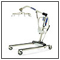
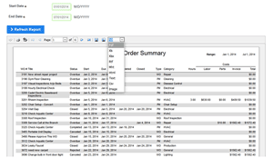

Optize your Hospital CMMS Software
Several issues prompt hospitals and healthcare orgaizations to begin the search for a healthcare facilities management software that can meet the demand of the department and the organization in a whole. First, the hospital's legacy CMMS is over 10 years old or the facility manager has been using excel or word to document paper requests. Beyond that, the system may not be web-based, and it no longer can properly support the departments many areas of responsibility, which include everything from plant operations and maintenance to energy management, environmental services, patient escort, operations support, and parking and valet services. Technicians need to work on handhelds in the field through smartphone technology.
The team researching CMMS and or a new healthcare facilities management software are typically from facilities operations, facilities planning and development, information systems (IS), and security services. Team members look for a system that would let managers monitor key performance indicators (KPI) related to department activities. These KPIs included demand work, preventive work, joint commission activity, preventive maintenance (PM) work orders past due, PM compliance, inspection-completion rate, and facility condition index. The new healthcare facilities management software must be robust enough to meet the future vision and needs of the department.
Maxpanda healthcare facilities management software has a very nice feature that monitors these activies. For example it notifies Admins if there has been similar work orders on the same piece of asset triguring a cause and effect alarm. Hospitals and other healthcare organizations use an extraordinary amount of equipment in day-to-day operations. Simply keeping records of things like maintenance, liability risks, funding, and patient care is not enough. Hospitals need a software program that provides maintenance management for medical equipment of all types and identifies as many vulnerabilities as possible.
Benefits for patients Obviously, the number one priority for any healthcare organization is its patients, and this is another area where Maxpanda Facilities Managent CMMS Software shines. Maxpanda's full-featured software package helps you devise and manage contingency situations for power outages, evacuations, and other emergencies. You can also track turnover times for emergency facilities, as well as cleaning of lobbies, ORs, patient waiting rooms, and beds. Communicate in real-team between requesters, vendors, contractors and internal staff on all submitted work orders and preventative maintenance routines.
Benefits for supply management It can be difficult to keep an accurate inventory of supplies in large healthcare facilities especially with legacy systems or spreadsheets. As shifts turn over and multiple departments access the same storage areas trouble begins. Our Healthcare Facilities Management Software helps you keep track of inventory so you'll know when you need to replenish your supplies. Detailed tracking can also give you a good idea which shifts or departments consume more supplies.
Benefits for risk assessment Our Facilities Managent CMMS Software is equipped with unique functionality that allow users to assess the potential risks of certain projects, equipment and investments, which in turn makes healthcare organizations more prepared. Benefits for inspection: Safety and health inspections are particularly important for healthcare facilities, Maxpanda will allow you to conduct them far more thoroughly. Our Facilities Managent CMMS Software can issue corrective orders from unlimited users including all your staff, team and even patients. Should some aspect of your operation fail an inspection, it can even be assigned in real-time to vendors which can further input information they collect on mobiles, tablets and desktops.
Do you know what your current Hospital CMMS Software is costing you?
The answer to Hospital CMMS Software is simple when you crunch the numbers using Maxpanda's Work Order Status, Work Order Count, Work Order Summary, Asset Cost Summary, Location Cost Summary & Resource Cost Summary pre-built reports. These are a small smaple of reports you can generate with a click of a button. Your data is always available when you need to present to upper management or maintain budgets.
Work Order Status - Graph your work orders by status broken down by current month, year, last month and lifetime.
Work Order Count - Graph work order statuses by selecting start and end dates.
Work Order Summary - A dynamic report allowing admins to select wo's by dates to create a real time report which includes: WO #, Title, Status, Start, Due, Completed, Closed, Type, Category, Hours, Labor, Parts, Invoice and Total Costs. This report can be extracted/downloaded to multiple file types including: PDF, XLS, XLSX, RTF, MHT, HTML, TEXT, CSV and IMAGE.
Asset Cost Summary - Similar to work order summary but admins select the desired assets within their account. This report can be extracted/downloaded to multiple file types.
Location Cost Summary - Admins select buildings and or multiple locations to capture total costs. This report can be extracted/downloaded to multiple file types.
Asset and Location Thresholds - Review administrative set amount of work orders per period. Why are there more work orders generated for certain areas of your buildings?
Resource Cost Summary - Generate a report to calculate labor costs for one or one thousand maintenance staff. This report can be extracted/downloaded to multiple file types.
Example of a work order summary report:

Download your data: FAQ
Download your Hospital CMMS Software data to your favorite file format 24/7. It's your data! Crunch it, email it to your accounting department, board members or senior management group. You can even map out specific fields to import into your accounting package if you like. Take control of your maintenance department with a click of a button.
Why is access to your Hospital CMMS Software data?
It's important that you can access your data when you want, where you want, whether to import it into another service or just create your own copy for your Hospital CMMS Software archives. People usually don't look to see if they can get their data out of a product until they decide that they want to leave.
For this reason, we always encourage you to ask these three questions before starting to use a product that will store your data:
Can I get my Hospital CMMS Software data out in an open, interoperable, portable format? YES.
How much is it going to cost to get my Hospital CMMS Software data out? Nothing.
How much of my time is it going to take to get my Hospital CMMS Software data out? Seconds.
How many Hospital CMMS Software reports can I create? Gazillions.
Classification of Medical Devices
You may ask yourself what is a medical device class and what’s the difference between class I, II and III. The answer is medical devices are categorized by class for the purpose of informing patients, doctors and manufacturers on the amount of risk involved and intention for the medical device. Keep track of all your equipment through Maxpanda Facilities Managent CMMS Software using our Hospital CMMS Software.
Classification of Medical Devices
A medical device is designed to improve patient’s health in diagnosis, therapy or surgery which are monitored and under strict regulations by food and drug administrations. Medical devices are classified into three classes based on the US classification system, which defines the amount of risk involved with the medical device and proper procedures that must be followed when using and manufacturing the device. Proper maintenance records are extremely important (especially preventative maintenance) not only for patients but to hospitals as well.
What is a Class I Medical Device?
Class I Medical Devices are simple in design and have little to no potential risk. Medical devices classified as type I must follow general FDA policy which includes registering the medical device, proper branding and labeling, proper manufacturing techniques and the FDA must be notified prior to marketing the device. Class I Medical Devices include tongue depressors, elastic bandages, hand held dental instruments and examination gloves to name few.
What is a Class II Medical Device?
Class II Medical devices are more complicated in design and pose a minimal risk. Medical devices classified as type II must follow general policy and special labeling, mandatory performance standards and post market surveillance through cmms documentation. Most medical devices that fall into the Class II medical devices category are X-ray machines, powered wheelchairs, infusion pumps and surgical / acupuncture needles.
What is a Class III Medical Device?
Class III Medical Devices are intricate in design and have the strictest guidelines because they pose the greatest risk. Class III Medical Devices must follow Class I and Class II guidelines but must also be pre-market approved by the FDA and a scientific review of the medical device must be made prior to marketing. Class III medical devices support or sustain human lives therefore malfunction is absolutely unacceptable. Class III Medical Devices include heart valves, implanted pacemakers and cerebral simulators.
Admins classify Asset Types multiple fields within the app. Our Healthcare Facilities Management Maintenance Software comes pre-populated with industry terms making it one of the easiest and most powerful Hospital CMMS Software to setup overnight. Grow and sort your lists as required, allowing the software to become a perfect fit for your organization. Biomed, locations, asset types, beds, location types, asset status, physical plants etc...YOU CAN DO THIS!

"Tri-Cities Community Health. We are a small health center located in Tri-Cities, Washington. We have 7 clinic, 2 school based and some other sites. We provide Primary Care, Dental, BHS and other ancillary services. As a result of our growth, we've reach out to many vendors to explore preventative maintenance software that tracks, prioritizes and forces users to submit and allow supervisors to approve requests before reaching our Maintenance Manager. The tracking, delegation, and feed-back from staff has been extremely positive. As in many cases when you start something new, we had a learning curve, but our maintenance crews and our front line staff caught on quickly. It's difficult to think where we would be without Maxpanda CMMS today. We are also exploring the feature that will send out a satisfaction survey to each user that submits requests." - Director Of Operations.
What are HIPAA & HITECH?
The Health Insurance Portability and Accountability Act (HIPAA) was passed in 1996. The legislation was designed to make it easier for workers to retain health insurance coverage when they change or lose their jobs. The legislation also sought to drive the adoption of electronic health records to improve the efficiency and quality of the American healthcare system through improved information sharing. Along with increasing the use of electronic medical records, the law included provisions to protect the security and privacy of Protected Health Information (PHI). PHI includes a very wide set of personally identifiable health- and health-related data, from insurance and billing information, to diagnosis data, clinical care data, and lab results such as images and test results. The rules apply to "Covered Entities", which include hospitals, medical services providers, employer sponsored health plans, research facilities and insurance companies that deal directly with patients and patient data. The law and regulations also extend the requirement to protect PHI to "Business Associates". HIPAA was expanded by the Health Information Technology for Economic and Clinical Health Act in 2009. HIPAA and HITECH establish a set of federal standards intended to protect the security and privacy of PHI. These provisions are included in what are known as the "Administrative Simplification" rules. HIPAA and HITECH impose requirements related to the use and disclosure of PHI, appropriate safeguards to protect PHI, individual rights, and administrative responsibilities. For additional information on how HIPAA and HITECH protect health information, visit: http://www.hhs.gov/ocr/privacy/hipaa/understanding/index.html.
What is HITRUST?
The Health Information Trust Alliance, or HITRUST Common Security Framework (CSF) in their own words, "is a certifiable framework that provides organizations with a comprehensive, flexible and efficient approach to regulatory compliance and risk management. Developed in collaboration with healthcare and information security professionals, the HITRUST CSF rationalizes healthcare-relevant regulations and standards into a single overarching security framework." The HITRUST CSF serves to unify security controls from federal law, such as HIPAA/HITECH, state law, such as Massachusetts, and non-governmental frameworks, like COBIT and PCI-DSS into a single framework that is tailored for healthcare needs and use. AWS provides a reliable, scalable, and inexpensive computing platform that can support healthcare customers' applications in a manner consistent with HIPAA, HITECH, and HITRUST CSF. As an example, one of our customers has created an environment within AWS that has been successfully audited for HIPAA/HITECH compliance, as well as HITRUST certified.
Will AWS Sign a Business Associate Agreement as Described in the HIPAA Rules and Regulations?
Yes. AWS has a standard business associate agreement we will present to customers for signature. It takes into account the unique services AWS provides and accommodates the AWS Shared Responsibility Model.
Is AWS & Maxpanda HIPAA-Certified?
In order to meet the HIPAA requirements applicable to the standard operating model, AWS aligns the HIPAA risk management program with FedRAMP and NIST 800-53, a higher security standard that maps to the HIPAA security rule. NIST supports this alignment and has issued SP 800-66, "An Introductory Resource Guide for Implementing the HIPAA Security Rule," which documents how NIST 800-53 aligns to the HIPAA Security rule.
Learn more about Maxpanda / AWS / HIPPA
Amazon Web Compliance: Compliance Docs | Compliance whitepaper: Whitepapers | Security webpage: Security is our #1 priority
Security whitepaper: Security is our #1 priority | HIPAA Webpage: HIPAA References | HIPAA whitepaper: HIPAA Whitepaper